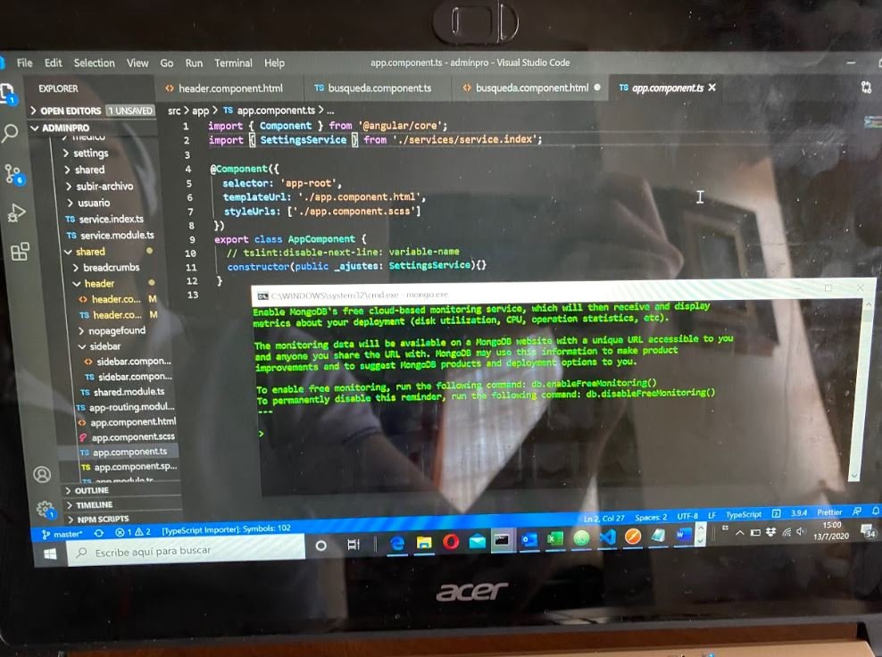

Como actividad de esta semana he estado aprendiendo a través de un curso de Udemy cóo hacer desarrollos web utilizando las tecnologícas MEAN las cuales se componen de MongoDB, Express JS, Angular JS y Node.js.
Mi motivación para hacer esta actividad es que a principios de año me encontré en la necesidad de reescribir una plataforma web que desarrollé hace años con tecnologías más recientes, rápidas, potentes y sobre todo conocidas por más gente.
Normalmente desarrollo esta actividad por las tardes-noches o los fines de semana sentado en mi escritorio con mi computadora.
Me gustaría normalmente tener más tiempo para poder desarrollar esta actividad.
Considero que no realizo diferente la actividad ya que nadie me está observando personalmente todos los días; pero si este fuera el caso, si desarrollaría esta actividad de forma diferente.
Según la Asociación Nacional de Universidades e Instituciones de Educación Superior en el 2016, hay 6,445 estudiantes egresados de carreras afines a Ciencias Computacionales cada año. Este número a nivel nacional no es tan alto por lo cual el aprovechar herramientas como Udemy, Coursera, etc... es fundamental.
|  |